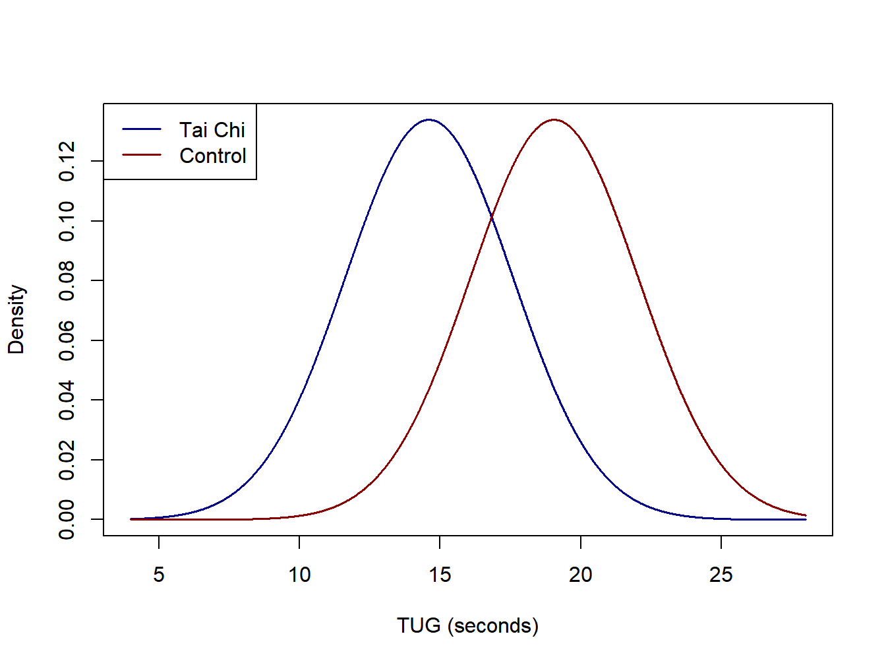
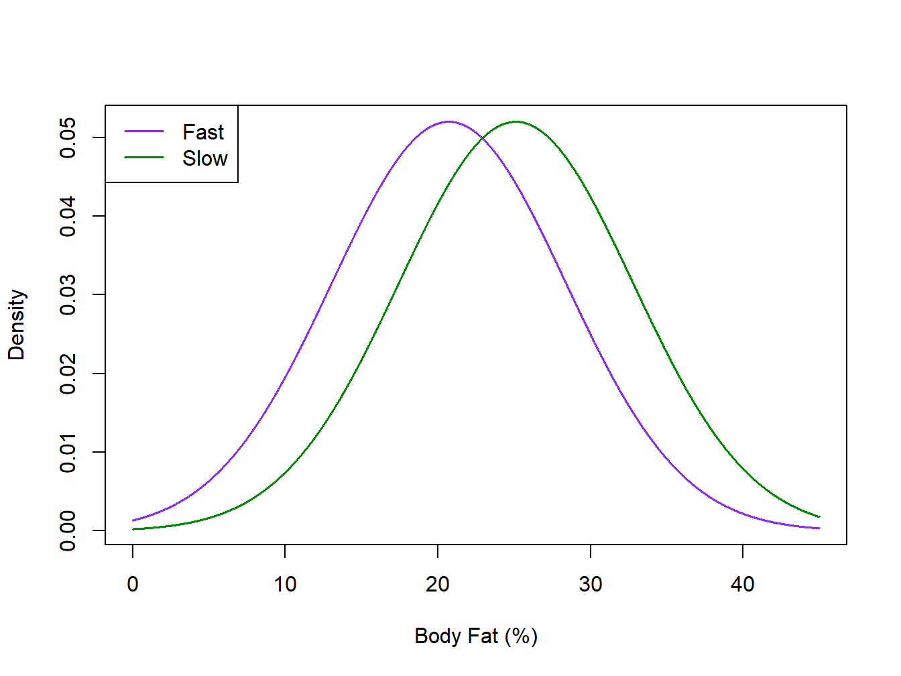
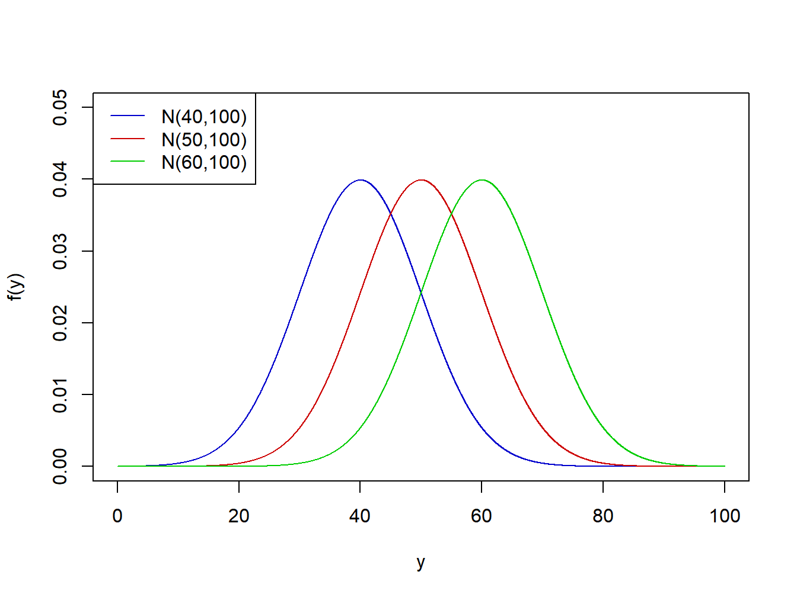
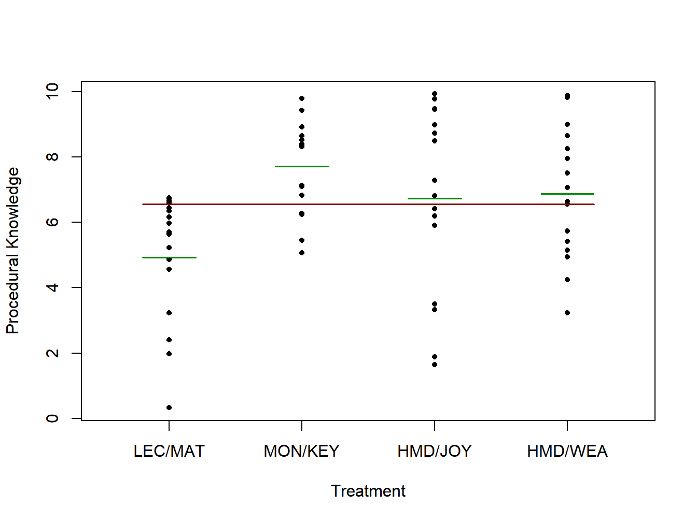
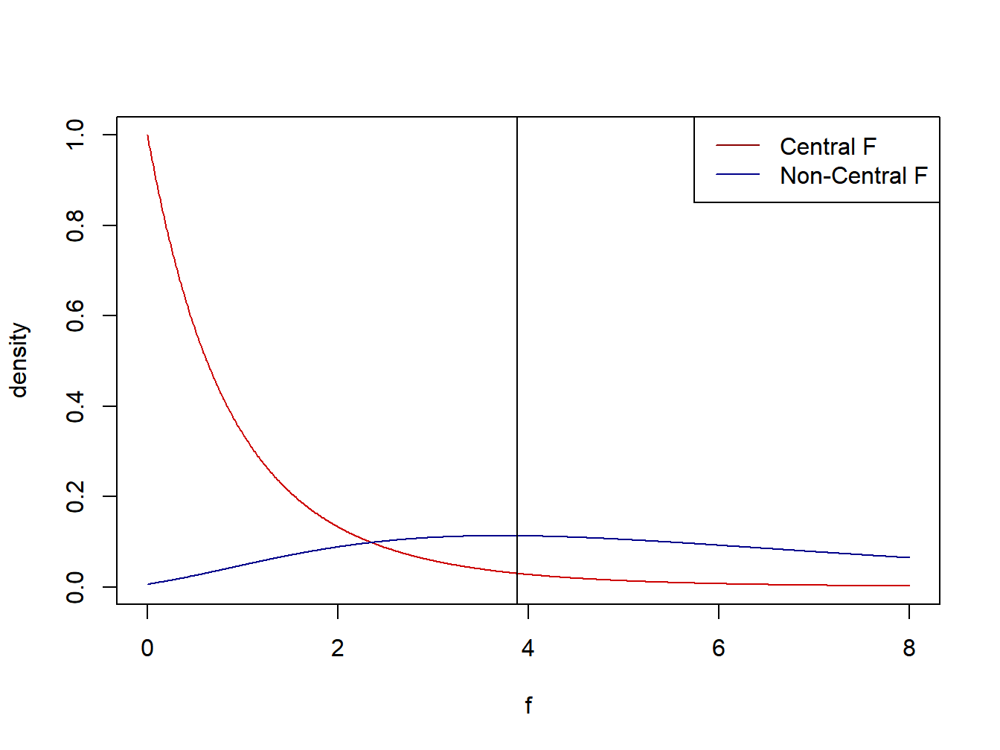

Chapter 3 Single Factor Studies
In this chapter, we consider the case where there is a single factor. The factor can be qualitative or quantitative. Qualitative factors can be nominal or ordinal. Nominal factors have no inherent ordering, while ordinal factors have an underlying ordering that is non-numeric. Quantitative factors can be used in linear or nonlinear regression models, however in some cases researchers don’t wish to place a structure to the model and treat levels as categories.
The factor levels, unless specified otherwise, will be treated as all levels of interest to researchers. These are referred to as fixed factors. Later in the course, we will consider factors with levels that are a sample from a population of levels, which will be referred to as random factors.
We will let the number of levels of the factor be represented as \(r\) where \(r \geq 2\). When \(r=2\), the analysis can be analyzed as an independent sample \(t\)-test, which we will see gives identical conclusions as the 1-Way Analysis of Variance described below.
The analysis will be the same whether the data are obtained from a Controlled Experiment or Observational Study, however interpretations of cause and effect are stronger for Controlled Experiments.
In this chapter, we will focus on models with independent, normally distributed errors with constant variance. We will consider other tests in subsequent chapters.
3.1 Models with \(r=2\) Factor Levels
In this section, we consider a Controlled Experiment and an Observational Study, each with two groups. We use the independent sample \(t\)-test in each case to compare the two means.
Example 2.1 - Tai Chi and Strength Training in Hip Replacement Patients
A controlled experiment was conducted to compare post-operative effects of an in-home training treatment for patients who have received hip replacement surgery (Zeng et al. 2015). The final analysis was based on \(n_T=59\) subjects who completed the protocol, 32 in the treatment group (Tai Chi and strength training) and 27 in the control group. Patients were randomly assigned to the \(r=2\) conditions. One response that was reported was Timed Up and Go Test (TUG) to measure mobility (lower times are better). The means, standard deviations, and sample sizes are given below for the treatment and control groups (the units are seconds).
\[ \mbox{Treatment: } \overline{y}_T=14.61 \quad s_T= 2.60 \quad n_T=32 \] \[ \mbox{Control: } \overline{y}_C=19.06 \quad s_C=3.37 \quad n_C=27 \]
For the 2-sample \(t\)-test (aka independent sample \(t\)-test), we will first compute the pooled variance then the \(t\)-statistic, critical value \((\alpha=0.05)\) and \(P\)-value for a 2-sided test.
\[ \mbox{Pooled Variance:} \quad s_p^2 = \frac{(32-1)(2.60)^2+(27-1)(3.37)^2}{32+27-2} = 8.86 \qquad s_p=\sqrt{8.86}=2.98\]
\[ \mbox{Test Statistic:} \quad t^* = \frac{14.61-19.06}{\sqrt{8.86\left(\frac{1}{32}+\frac{1}{27}\right)}} =\frac{-4.45}{0.78}=-5.71 \]
\[ \mbox{Rejection Region:} \quad |t^*| \geq t_{.975,57}=2.002 \qquad \mbox{P-value:} \quad 2P\left(t_{57}\geq |-5.71|\right)<.0001 \] \[ 95\% \mbox{ Confidence Interval:} \quad -5.71 \pm 2.002(0.78) \quad \equiv \quad -5.71 \pm 1.56 \quad \equiv \quad (-7.27,-4.15) \]
The Effect Size is the absolute difference in the sample means in units of the pooled standard deviation. In this example, \(e=4.45/2.98=1.49\) which is considered a large effect size.
\[\nabla\]
Example 2.2 - Firefighter Air Consumption
An observational study was conducted to compare firefighters that were classified into two categories of air consumption, slow and fast (Wohlgemuth et al. 2024). The firefighters were classified based on scores for 10 tasks pertinent to firefighting. Once the \(n_T=160\) firefighters were classified into the two groups (94 fast and 66 slow), the groups were compared with respect to several physical characteristics including Age, Body Mass Index, and Peak Heart Rate (none of these were used in classifying as Fast/Slow Air Consumption). Summary statistics for the response Body Fat Percentage and the corresponding \(t\)-test are given below.
\[ \mbox{Fast: } \overline{y}_F=20.71 \quad s_F=6.65 \quad n_F=94 \qquad \mbox{Slow: } \overline{y}_S=25.11 \quad s_S=8.93 \quad n_S=66 \]
\[ s_p^2 = \frac{(94-1)(6.65)^2+(66-1)(8.93)^2}{94+66-2}=58.84 \qquad s_p=7.67\]
\[ t^*=\frac{20.71-25.11}{\sqrt{58.85\left(\frac{1}{94}+\frac{1}{66}\right)}} = \frac{-4.40}{1.23}=-3.57 \qquad t_{.975,158}=1.975 \qquad P=.0005 \] \[ 95\% \mbox{ Confidence Interval:} \quad -4.40 \pm 1.975(1.23) \quad \equiv \quad -4.40 \pm 2.43 \quad \equiv \quad (-6.83,-1.97) \]
For this example, the effect size is \(e=4.40/7.67=0.57\).
Idealized normal distributions for the Tai Chi and Firefighter Air Consumption studies are given in Figure 3.1 and Figure 3.2.

Figure 3.1: Idealized normal distibutions for the Tai Chi study

Figure 3.2: Idealized normal distibutions for the Firefighter air consumption study
\[\nabla\]
There are various ways to parameterize single factor models. We will consider the following three formulations in this chapter.
- Cell Means Model - Each treatment mean is its own parameter (no intercept term)
- Treatment Effect Model - Intercept is the mean of the group means, each treatment has an effect relative to the mean, with effects summing to 0
- Reference Group Model - Intercept corresponds to the mean for Group 1, remaining parameters are differences between remaining group means and group 1 mean
3.2 Three Model Formulations
3.2.1 Cell Means Model
The model and assumptions are given below for the Cell Means Model. Note that the total sample size is \(n_T=n_1+\cdots+n_r=\sum_{i=1}^rn_i\). When all sample sizes are equal \((n_i=n)\), the design is said to be balanced.
\[ Y_{ij}=\mu_i + \epsilon_{ij} \qquad i=1,\ldots,r; \quad j=1,\ldots, n_i \qquad \epsilon_{ij} \sim NID\left(0,\sigma^2\right) \]
\[ E\{Y_{ij}\} = E\{\mu_i + \epsilon_{ij}\} = \mu_i+0=\mu_i \qquad V\{Y_{ij}\} = V\{\mu_i + \epsilon_{ij}\} = 0 +\sigma^2=\sigma^2 \]
For this model, the treatment/population mean for the \(i^{th}\) condition is \(\mu_i\) and the variance of the individual measurements within each condition is assumed to be \(\sigma^2\) (standard deviation = \(\sigma\)) . Further, the individual measurements within each condition are assumed to be independent and normally distributed.
The point estimators for the population means, which are derived below, are the sample means for the various groups. The estimator for the population variance is the pooled variance among the individual groups, which is the same for all three model forms.
3.2.2 Treatment Effects Model
Let \(\mu_i\) be the mean for treatment \(i\), and let \(\mu_{\bullet}\) be the unweighted mean of the \(\mu_i^s\).
\[ \mu_{\bullet}=\frac{\sum_{i=1}^r\mu_i}{r} \qquad \mu_i = \mu_{\bullet} + \left(\mu_i-\mu_{\bullet}\right) = \mu_{\bullet} + \tau_i \quad \Rightarrow \quad \tau_i = \mu_i-\mu_{\bullet} \] \[ \mu_1=\cdots=\mu_r=\mu_{\bullet} \quad \Rightarrow \quad \tau_1=\cdots=\tau_r = 0 \]
\[ Y_{ij}=\mu_{\bullet} +\tau_i + \epsilon_{ij} \qquad i=1,\ldots,r; \quad j=1,\ldots, n_i \qquad \epsilon_{ij} \sim NID\left(0,\sigma^2\right) \] \[ E\{Y_{ij}\} = E\{\mu_{\bullet} +\tau_i + \epsilon_{ij}\} = \mu_{\bullet} +\tau_i+0=\mu_{\bullet} +\tau_i \qquad V\{Y_{ij}\} = V\{\mu_{\bullet} +\tau_i + \epsilon_{ij}\} = 0 +\sigma^2=\sigma^2 \]
\[ \sum_{i=1}^{r}\tau_i=0 \quad \Rightarrow \quad \tau_r = -\sum_{i=1}^{r-1}\tau_i \]
The point estimator for the overall population mean is the unweighted mean of group sample means. The estimator for the effect of group \(i\) is the difference between the sample mean for group \(i\) and the overall unweighted mean.
3.2.3 Reference Group Model
This model, which is the default model for the lm and aov functions in R, uses group 1 (based on alpha-numeric ordering of the group levels) as the intercept. The remaining parameters are the differences between the remaining \(r-1\) group means and the mean for group 1. The point estimators are based on the corresponding sample means.
An example where \(r=3\) conditions have means of \(\mu_1=40\), \(\mu_2=50\), and \(\mu_3=60\), respectively and standard deviation \(\sigma=10\) is given in Figure 3.3.

Figure 3.3: Normal distibutions with means=40,50,60 and standard deviation=10
Example 2.3 - Virtual Training for a Lifeboat Launching Task A study in South Korea compared \(r=4\) methods of training to conduct a lifeboat launching task (Jung and Ahn 2018). The treatments and their labels from the paper are given below and the response \(Y\) was a procedural knowledge score for subjects post training.
- Lecture/Materials - Traditional Lecture with no computer component (LEC/MAT)
- Monitor/Keyboard - Trained virtually with a monitor, keyboard, and mouse (MON/KEY)
- Head-Mounted Display/Joypad - Trained virtually with HMD and joypad (HMD/JOY)
- Head-Mounted Display/Wearable Sensors - (HMD/WEA)
There were a total of \(n_T=64\) subjects and they were randomized so that 16 subjects received each treatment \(\left(n_1=n_2=n_3=n_4=16\right)\). Data that have been generated to match the authors’ reported means and standard deviations are given in Table 3.1. Note that when we later run this analysis in R, there will be a variable for treatment and a variable for procedural score. Figure 3.4 gives the generated observed values (dots), treatment means (green lines), and the overall mean (red line).
| LEC/MAT (i=1) | MON/KEY (i=2) | HMD/JOY (i=3) | HMD/WEA (i=4) | |
|---|---|---|---|---|
| j=1 | 4.5614 | 5.4532 | 1.8773 | 9.8257 |
| j=2 | 6.6593 | 8.9208 | 6.1884 | 8.9988 |
| j=3 | 5.6427 | 8.3489 | 6.8029 | 5.4112 |
| j=4 | 6.4394 | 8.3175 | 9.4535 | 4.9396 |
| j=5 | 4.8635 | 9.7848 | 8.7312 | 8.6486 |
| j=6 | 0.3268 | 6.2697 | 6.4198 | 5.1459 |
| j=7 | 5.6990 | 7.1327 | 8.4955 | 7.0656 |
| j=8 | 6.3545 | 7.0886 | 5.9008 | 7.9552 |
| j=9 | 6.7509 | 5.0733 | 3.3336 | 5.7284 |
| j=10 | 6.6019 | 8.3865 | 1.6530 | 6.6314 |
| j=11 | 3.2365 | 9.4227 | 9.4710 | 7.5014 |
| j=12 | 6.1655 | 8.9142 | 7.2818 | 8.2456 |
| j=13 | 2.4060 | 8.5150 | 9.7649 | 4.2465 |
| j=14 | 1.9851 | 6.8198 | 3.4931 | 3.2286 |
| j=15 | 5.2198 | 8.6390 | 8.9848 | 6.5520 |
| j=16 | 5.9765 | 6.2467 | 9.9261 | 9.8754 |
| n | 16.0000 | 16.0000 | 16.0000 | 16.0000 |
| Mean | 4.9306 | 7.7083 | 6.7361 | 6.8750 |
| SD | 1.9400 | 1.4300 | 2.8200 | 1.9900 |
## grp.trt procKnow
## 1 1 4.5614
## 2 1 6.6593
Figure 3.4: Procedural knowledge scores for lifeboat training study
Using the summary data from the table, we will obtain point estimates and standard errors directly for the three model formulations directly, then using R. First, we compute the pooled standard deviation (aka residual standard error).
\[ s=\sqrt{\frac{\sum_{i=1}^r\left(n_i-1\right)s_i^2}{n_T-r}} = \sqrt{\frac{(16-1)\left(1.94^2+1.43^2+2.82^2+1.99^2\right)}{64-4}} = 2.105 \]
Cell Means Model
\[ \hat{\mu}_1=\overline{y}_1=4.931 \quad \hat{\mu}_2=\overline{y}_2=7.708 \quad \hat{\mu}_3=\overline{y}_3=6.736 \quad \hat{\mu}_4=\overline{y}_4=6.875 \]
\[ \hat{SE}\left\{\hat{\mu}_i\right\}=\frac{s}{\sqrt{n_i}}=\frac{2.105}{\sqrt{16}}=0.526 \qquad i=1,2,3,4 \]
Treatment Effects Model
\[ \hat{\mu}=\frac{4.931+7.708+6.736+6.875}{4}=6.563 \]
\[ \hat{SE}\left\{\hat{\mu}\right\}=s\sqrt{\frac{1}{r^2}\sum_{i=1}^r\frac{1}{n_i}} = 2.105\sqrt{\frac{1}{4^2}4\left(\frac{1}{16}\right)}=0.263 \] \[ \hat{\tau}_1=4.931-6.563=-1.632 \quad \hat{\tau}_2=1.145 \quad \hat{\tau}_3=0.173 \quad \hat{\tau}_4=0.312 \]
To obtain the standard error for \(\hat{\tau}_k\), we can re-write it as follows and make use of independence among group means.
\[ \hat{\tau}_k = \overline{y}_k-\hat{\mu} = \overline{y}_k - \frac{1}{r}\sum_{i=1}^r\overline{y}_i =\frac{r-1}{r} \overline{y}_k - \frac{1}{r}\sum_{i=1 \atop i \not=k}^r\overline{y}_i \]
\[ \hat{SE}\left\{\hat{\tau}_k\right\} = s\sqrt{\frac{1}{r^2}\left(\frac{(r-1)^2}{n_k}+ \sum_{i=1 \atop i \not=k}^r\frac{1}{n_i}\right)} = 2.105\sqrt{\frac{1}{4^2}\left(\frac{(4-1)^2}{16}+3\frac{1}{16}\right)} =0.456 \]
Reference Group Model
\[ \hat{\mu}_1 = \overline{y}_1 = 4.931 \qquad \hat{SE}\left\{\hat{\mu}_1\right\}= \frac{s}{\sqrt{n_1}}=\frac{2.105}{\sqrt{16}}=0.526 \]
\[ i=2,\ldots, r \quad \hat{\tau}_i = \overline{y}_i-\overline{y}_1 \qquad \hat{SE}\left\{\hat{\tau}_i\right\}=s \sqrt{\frac{1}{n_i}+\frac{1}{n_1}} \] \[ \hat{\tau}_2=7.708-4.931=2.777 \quad \hat{\tau}_3=6.736-4.931=1.805 \quad \hat{\tau}_4=6.875-4.931=1.944 \] \[ \hat{SE}\left\{\hat{\tau}_i\right\}=2.105 \sqrt{\frac{1}{16}+\frac{1}{16}} = 0.744 \]
## grp.trt procKnow
## 1 1 4.5614
## 2 1 6.6593## Cell Means Model (Separate means for each group, no intercept)
vt.mod1 <- lm(procKnow ~ factor(grp.trt) - 1, data=vt)
summary(vt.mod1)##
## Call:
## lm(formula = procKnow ~ factor(grp.trt) - 1, data = vt)
##
## Residuals:
## Min 1Q Median 3Q Max
## -5.0831 -1.4444 0.5774 1.5495 3.1900
##
## Coefficients:
## Estimate Std. Error t value Pr(>|t|)
## factor(grp.trt)1 4.9306 0.5262 9.37 2.37e-13 ***
## factor(grp.trt)2 7.7083 0.5262 14.65 < 2e-16 ***
## factor(grp.trt)3 6.7361 0.5262 12.80 < 2e-16 ***
## factor(grp.trt)4 6.8750 0.5262 13.06 < 2e-16 ***
## ---
## Signif. codes: 0 '***' 0.001 '**' 0.01 '*' 0.05 '.' 0.1 ' ' 1
##
## Residual standard error: 2.105 on 60 degrees of freedom
## Multiple R-squared: 0.9139, Adjusted R-squared: 0.9082
## F-statistic: 159.2 on 4 and 60 DF, p-value: < 2.2e-16## Treatment Effects Model
options(contrasts=c("contr.sum","contr.poly"))
vt.mod2 <- lm(procKnow ~ factor(grp.trt), data=vt)
summary(vt.mod2)##
## Call:
## lm(formula = procKnow ~ factor(grp.trt), data = vt)
##
## Residuals:
## Min 1Q Median 3Q Max
## -5.0831 -1.4444 0.5774 1.5495 3.1900
##
## Coefficients:
## Estimate Std. Error t value Pr(>|t|)
## (Intercept) 6.5625 0.2631 24.943 < 2e-16 ***
## factor(grp.trt)1 -1.6319 0.4557 -3.581 0.000686 ***
## factor(grp.trt)2 1.1458 0.4557 2.514 0.014622 *
## factor(grp.trt)3 0.1736 0.4557 0.381 0.704573
## ---
## Signif. codes: 0 '***' 0.001 '**' 0.01 '*' 0.05 '.' 0.1 ' ' 1
##
## Residual standard error: 2.105 on 60 degrees of freedom
## Multiple R-squared: 0.1981, Adjusted R-squared: 0.158
## F-statistic: 4.941 on 3 and 60 DF, p-value: 0.003931## Reference Group Model (Default in R)
options(contrasts=c("contr.treatment","contr.poly"))
vt.mod3 <- lm(procKnow ~ factor(grp.trt), data=vt)
summary(vt.mod3)##
## Call:
## lm(formula = procKnow ~ factor(grp.trt), data = vt)
##
## Residuals:
## Min 1Q Median 3Q Max
## -5.0831 -1.4444 0.5774 1.5495 3.1900
##
## Coefficients:
## Estimate Std. Error t value Pr(>|t|)
## (Intercept) 4.9306 0.5262 9.370 2.37e-13 ***
## factor(grp.trt)2 2.7778 0.7442 3.733 0.000423 ***
## factor(grp.trt)3 1.8056 0.7442 2.426 0.018277 *
## factor(grp.trt)4 1.9444 0.7442 2.613 0.011329 *
## ---
## Signif. codes: 0 '***' 0.001 '**' 0.01 '*' 0.05 '.' 0.1 ' ' 1
##
## Residual standard error: 2.105 on 60 degrees of freedom
## Multiple R-squared: 0.1981, Adjusted R-squared: 0.158
## F-statistic: 4.941 on 3 and 60 DF, p-value: 0.003931\[\nabla\]
3.3 The Analysis of Variance and \(F\)-test
In this section, we obtain a decomposition of the total variation of the individual measurements around the overall mean, the Total Sum of Squares, which we will denote \(SSTO\). The Degrees of Freedom associated with the total sum of squares is \(df_{TO}=n_T-1\).
\[ \overline{Y}_{\bullet\bullet}= \frac{\sum_{i=1}^r\sum_{j=1}^{n_i}Y_{ij}}{n_T} \qquad \qquad SSTO = \sum_{i=1}^r\sum_{j=1}^{n_i} \left(Y_{ij}-\overline{Y}_{\bullet\bullet}\right)^2 \qquad df_{TO}=n_T-1 \]
The total sum of squares can be partitioned into the Error Sum of Squares and the Treatment Sum of Squares. The error sum of squares can be thought of as how variable are measurements within the same treatment or group. The treatment sum of squares represents how variable the treatment or group means are around the overall mean (weighted by their sample sizes). The sums of squares are given below (note that in R, for linear models, the error sum of squares is labelled as \(RSS\), for the residual sum of squares). As with linear regression models, the error sum of squares is the sum of the squared distances from the observed values to their predicted values.
\[ SSE = \sum_{i=1}^r\sum_{j=1}^{n_i} \left(Y_{ij}-\hat{Y}_{ij}\right)^2 \] Noting that for this model, \(\hat{Y}_{ij}=\overline{Y}_{i\bullet}\), we obtain the following formula for \(SSE\). The degrees of freedom for the error sum of squares is \(df_E=n_T-r\).
\[ SSE=\sum_{i=1}^r\sum_{j=1}^{n_i} \left(Y_{ij}-\overline{Y}_{i\bullet}\right)^2 \qquad df_E=n_T-r \]
Another useful way of computing \(SSE\) based on published summary statistics is given below. Suppose the authors have published the sample sizes \(\left\{n_i\right\}\), the sample means \(\left\{\overline{y}_{i\bullet}\right\}\) using lower case \(y\) as these are observed means from a realization of this experiment, and the sample standard deviations \(\left\{s_i\right\}\) for the \(r\) treatments. Then \(SSE\) can be computed as below.
\[ s_i = \sqrt{\frac{\sum_{j=1}^{n_i}\left(y_{ij}-\overline{y}_{i\bullet}\right)^2}{n_i-1}} \quad \Rightarrow \quad SSE = \sum_{i=1}^r\left(n_i-1\right)s_i^2 \]
The Treatment Sum of Squares, denoted as \(SSTR\), acts like the regression sum of squares for linear regression models. That is, \(SSTR\) represents the sum of squared differences from the predicted values to the overall mean. The degrees of freedom for the treatment sum of squares is \(df_{TR}=r-1\). Keeping in mind that the fitted value for \(Y_{ij}\) is \(\hat{Y_{ij}} = \overline{Y}_{i\bullet}\), we obtain SSTR as follows.
\[ SSTR = \sum_{i=1}^r\sum_{j=1}^{n_i} \left(\overline{Y}_{i\bullet}- \overline{Y}_{\bullet\bullet}\right)^2 = \sum_{i=1}^r n_i \left(\overline{Y}_{i\bullet}- \overline{Y}_{\bullet\bullet}\right)^2 \qquad df_{TR}=r-1 \]
For each sum of squares, the Mean Square is the sum of squares divided by its corresponding degrees of freedom, and are used for inferences among the means.
In single factor models, the goal is typically to test for differences among the treatment or group means. The null hypothesis is that the means are all equal, while the alternative hypothesis is that there are differences among the means. In the next chapter, we consider specific comparisons among treatments.
\[ H_0: \mu_1=\cdots = \mu_r \quad \Rightarrow \quad \tau_1=\cdots = \tau_r = 0 \] The test statistic is the \(F\)-statistic from the Analysis of Variance and will be used in many forms throughout this course. Under the null hypothesis, the \(F\)-statistic follows the \(F\)-distribution, based on its numerator and denominator degrees of freedom. Large values of the \(F\)-statistic are evidence against the null hypothesis. Technical details of the test are given in Section 2.4.
\[ \mbox{Test Statistic:} \quad F^* = \frac{\left[\frac{SSTR}{df_{TR}}\right]} {\left[\frac{SSE}{df_{E}}\right]} \quad = \quad \frac{MSTR}{MSE} \]
\[ \mbox{Rejection Region:} \quad F^* \geq F_{1-\alpha;r-1,n_T-r} \qquad P=P\left(F_{r-1,n_T-r} \geq F^*\right) \]
The effect size for the One-Way ANOVA model is \(\eta^2=SSTR/SSTO\), that is, the fraction of the total variation that is “attributable” to differences in the group means.
Example 2.4 - Virtual Training for a Lifeboat Launching Task
\[ n_1=n_2=n_3=n_4=16 \qquad \overline{y}_{1\bullet}=4.931 \quad \overline{y}_{2\bullet}=7.708 \quad \overline{y}_{3\bullet}=6.736 \quad \overline{y}_{4\bullet}=6.875 \quad \overline{y}_{\bullet\bullet}=6.563 \]
\[ SSTR=16\left[(4.931-6.563)^2+(7.708-6.563)^2+(6.736-6.563)^2+(6.875-6.563)^2\right] =65.628 \]
\[ s_1=1.94 \quad s_2=1.43 \quad s_3=2.82 \quad s_4=1.99 \] \[ \quad \Rightarrow \quad SSE=(16-1)\left(1.94^2+1.43^2+2.82^2+1.99^2\right)=265.815 \]
Now, we test for differences among the effects of the \(r=4\) teaching methods. The degrees of freedom for treatments is \(df_{TR}=r-1=3\) and for error is \(df_E=n_T-r=60\).
\[ H_0: \mu_1=\cdots = \mu_4 \quad \Rightarrow \quad \tau_1=\cdots = \tau_4 = 0 \] \[ \mbox{Test Statistic:} \quad F^* = \frac{\left[\frac{SSTR}{df_{TR}}\right]} {\left[\frac{SSE}{df_{E}}\right]} =\frac{\left[\frac{65.789}{3}\right]} {\left[\frac{265.815}{60}\right]} = \frac{21.930}{4.430} = 4.950 \] \[ \mbox{Rejection Region:} \quad F^* \geq F_{.95;3,60}=2.578 \qquad P=P\left(F_{3,60} \geq 4.950\right) = .0039 \] \[ \eta^2=\frac{SSTR}{SSTO}=\frac{SSTR}{SSTR+SSE}=\frac{65.789}{65.789+265.815}= \frac{65.789}{331.604}=0.1984 \] Approximately 20% of the total variation is due to differences in the training methods.
We obtain the Sums of Squares for Treatments and Error below using the anova of the lm model fit. A warning involves the fact that when using the cell means model (with no intercept) the Treatment Sum of Squares and Degrees of Freedom are incorrect here. The Treatment Sum of Squares in this form also includes the correction for the mean, \(n_T\overline{y}_{\bullet\bullet}^2\). We are testing \(H_0:\mu_1=\mu_2=\mu_3=\mu_4=0\), which is a much stronger hypothesis than testing \(H_0:\mu_1=\mu_2=\mu_3=\mu_4\). We will use the Treatment Effects model or the Reference Group model function to obtain the correct degrees of freedom and \(F\)-statistic below.
## grp.trt procKnow
## 1 1 4.5614
## 2 1 6.6593##
## Call:
## lm(formula = procKnow ~ factor(grp.trt) - 1, data = vt)
##
## Residuals:
## Min 1Q Median 3Q Max
## -5.0831 -1.4444 0.5774 1.5495 3.1900
##
## Coefficients:
## Estimate Std. Error t value Pr(>|t|)
## factor(grp.trt)1 4.9306 0.5262 9.37 2.37e-13 ***
## factor(grp.trt)2 7.7083 0.5262 14.65 < 2e-16 ***
## factor(grp.trt)3 6.7361 0.5262 12.80 < 2e-16 ***
## factor(grp.trt)4 6.8750 0.5262 13.06 < 2e-16 ***
## ---
## Signif. codes: 0 '***' 0.001 '**' 0.01 '*' 0.05 '.' 0.1 ' ' 1
##
## Residual standard error: 2.105 on 60 degrees of freedom
## Multiple R-squared: 0.9139, Adjusted R-squared: 0.9082
## F-statistic: 159.2 on 4 and 60 DF, p-value: < 2.2e-16## Analysis of Variance Table
##
## Response: procKnow
## Df Sum Sq Mean Sq F value Pr(>F)
## factor(grp.trt) 4 2821.91 705.48 159.24 < 2.2e-16 ***
## Residuals 60 265.81 4.43
## ---
## Signif. codes: 0 '***' 0.001 '**' 0.01 '*' 0.05 '.' 0.1 ' ' 1## Analysis of Variance Table
##
## Response: procKnow
## Df Sum Sq Mean Sq F value Pr(>F)
## factor(grp.trt) 3 65.664 21.8880 4.9406 0.003931 **
## Residuals 60 265.815 4.4302
## ---
## Signif. codes: 0 '***' 0.001 '**' 0.01 '*' 0.05 '.' 0.1 ' ' 1## For one-way between subjects designs, partial eta squared is equivalent
## to eta squared. Returning eta squared.## # Effect Size for ANOVA
##
## Parameter | η² | 95% CI
## -------------------------------------
## factor(grp.trt) | 0.91 | [0.88, 1.00]
##
## - One-sided CIs: upper bound fixed at [1.00].## For one-way between subjects designs, partial eta squared is equivalent
## to eta squared. Returning eta squared.## # Effect Size for ANOVA
##
## Parameter | η² | 95% CI
## -------------------------------------
## factor(grp.trt) | 0.20 | [0.05, 1.00]
##
## - One-sided CIs: upper bound fixed at [1.00].Note that for the cell means model (vt.mod1) the sum of squares for treatments includes the “correction for the mean,” thus it is larger than \(SSTR\) by \(n_T\overline{y}_{\bullet\bullet}^2\). The effect size for that model is also too large \(\eta^2=2821.91/(2821.91+265.81)=0.91\).
Here we will conduct the analysis directly from the raw data, computing \(\left\{n_i\right\}\), \(\left\{\overline{y}_{i\bullet}\right\}\), and \(\left\{s_i\right\}\) as well as sums of squares and degrees of freedom.
## grp.trt procKnow
## 1 1 4.5614
## 2 1 6.6593attach(vt)
#### "Brute-Force" Calculations
n.trt <- as.vector(tapply(procKnow, grp.trt, length)) ## Treatment sample sizes
mean.trt <- as.vector(tapply(procKnow, grp.trt, mean)) ## Treatment means
sd.trt <- as.vector(tapply(procKnow, grp.trt, sd)) ## Treatment SDs
mean.all <- mean(procKnow) ## Overall Mean
r <- length(n.trt) ## Number of Treatments
n_T <- sum(n.trt) ## Overall Mean
#### Sums of Squares, degrees of freedom, Mean Squares, F-test
SSTR <- sum(n.trt * (mean.trt - mean.all)^2); dfTR <- r-1
SSE <- sum((n.trt-1) * sd.trt^2); dfE <- n_T-r
SSTO <- SSTR + SSE; dfTO <- n_T-1
MSTR <- SSTR / dfTR
MSE <- SSE / dfE
F_star <- MSTR / MSE
F.95 <- qf(.95,dfTR,dfE)
pF <- 1 - pf(F_star, dfTR, dfE)
eta2 <- SSTR/SSTO
#### Set-up output
trt.out <- cbind(dfTR, SSTR, MSTR, F_star, F.95, pF, eta2)
err.out <- cbind(dfE, SSE, MSE, NA, NA, NA, NA)
tot.out <- cbind(dfTO, SSTO, NA, NA, NA, NA, NA)
aov.out <- rbind(trt.out, err.out, tot.out)
colnames(aov.out) <- c("df", "SS", "MS", "F*", "F(.95)", "P(>F*)", "eta2")
rownames(aov.out) <- c("Treatment", "Error", "Total")
round(aov.out,4)## df SS MS F* F(.95) P(>F*) eta2
## Treatment 3 65.6639 21.8880 4.9406 2.7581 0.0039 0.1981
## Error 60 265.8149 4.4302 NA NA NA NA
## Total 63 331.4788 NA NA NA NA NA\[\nabla\]
3.3.1 General Linear Test Approach
We begin with \(r\) treatments with no restrictions on their population means \(\left\{\mu_i\right\}\). We then place a restriction on the population means. Both models are fit, and the Error Sums of Squares and Degrees of Freedom are obtained for each model.
Example 2.5 - Virtual Training for a Lifeboat Launching Task
Consider the following restrictions in light of the virtual training experiment.
- No treatment differences among the 4 treatments: \(\mu_1=\mu_2=\mu_3=\mu_4\)
- No treatment differences among the 3 virtual reality treatments: \(\mu_2=\mu_3=\mu_4\)
- No treatment differences among the 2 Head-Mounted Display treatments: \(\mu_3=\mu_4\)
All of these can be tested using a general linear test. Note that the first test is the same as the \(F\)-test conducted from the Analysis of Variance.
The form of the test is as follows. Let the Complete model be the model with all \(r\) means allowed to be different values. In the virtual reality case we have the following numbers of restrictions.
- \(H_0:\mu_1=\mu_2=\mu_3=\mu_4\) - There are 3 restrictions
- \(H_0:\mu_1, \quad \mu_2=\mu_3=\mu_4\) - There are 2 restrictions
- \(H_0:\mu_1, \mu_2, \quad \mu_3=\mu_4\) - There is 1 restriction
Once we fit the Complete (No restriction) and Reduced (Restricted) models, we can obtain the Test Statistic as follows. Start with the first restriction: \(\mu_1=\mu_2=\mu_3=\mu_4=\mu_c\) where \(\mu_c\) is the common mean.
\[ \mbox{Reduced Model: (1 Mean)} \qquad \hat{\mu}_c = \overline{Y}_{\bullet\bullet} = \hat{Y}_{ij}(R) \]
\[ \quad \Rightarrow \quad SSE(R)=\sum_{i=1}^r\sum_{j=1}^{n_i}\left(Y_{ij}-\hat{Y}_{ij}(R)\right)^2 = \sum_{i=1}^r\sum_{j=1}^{n_i}\left(Y_{ij}-\overline{Y}_{\bullet\bullet}\right)^2 = SSTO \qquad df_R = n_T-1 \]
\[ \mbox{Complete Model: (4 Means)} \qquad \hat{\mu}_i = \overline{Y}_{i\bullet}=\hat{Y}_{ij}(C) \] \[ \quad \Rightarrow \quad SSE(C)=\sum_{i=1}^r\sum_{j=1}^{n_i}\left(Y_{ij}-\hat{Y}_{ij}(C)\right)^2 = \sum_{i=1}^r\sum_{j=1}^{n_i}\left(Y_{ij}-\overline{Y}_{i\bullet}\right)^2 = SSE \qquad df_C = n_T-r \]
The general linear \(F\)-test is conducted as follows once the previous models have been fit.
\[ F^*=\frac{\left[\frac{SSE(R)-SSE(C)}{df_R-df_C}\right]}{\left[\frac{SSE(C)}{df_C}\right]} \qquad \mbox{Reject } H_0 \mbox{ if: } \quad F^* \geq F_{1-\alpha,df_R-df_C, df_C} \]
In the case of the test of \(H_0:\mu_1=\mu_2=\cdots = \mu_r\), we obtain the following result where we reproduce the ANOVA \(F\)-test.
\[ SSE(R)=SSTO \quad SSE(C) = SSE \quad \Rightarrow \quad SSE(R)-SSE(C)=SSTR \]
\[ df_R = n_T-1 \quad df_C = n_T-r \quad \Rightarrow \quad df_R-df_C = \left(n_T-1\right)-\left(n_T-r\right) = r-1 \]
\[ F^*=\frac{\left[\frac{SSE(R)-SSE(C)}{df_R-df_C}\right]}{\left[\frac{SSE(C)}{df_C}\right]}= \frac{\left[\frac{SSTR}{r-1}\right]}{\left[\frac{SSE}{n_T-r}\right]}=\frac{MSTR}{MSE} \]
For the second model described above (equality of virtual reality means), the reduced model would have a single mean for the LEC/MAT control group and common means for the three virtual reality treatments.
\[ \hat{Y}_{1j}=\overline{Y}_{1\bullet} \qquad \qquad \hat{Y}_{2j}=\hat{Y}_{3j}=\hat{Y}_{4j}=\frac{\sum_{i=2}^4\sum_{j=1}^{n_i}Y_{ij}}{n_2+n_3+n_4} = \frac{\sum_{i=2}^4n_i\overline{Y}_{i\bullet}}{\sum_{i=2}^4 n_i} \]
The third model involves leaving treatments 1 and 2 as individual groups and combines treatments 3 and 4 into a single group.
\[ \hat{Y}_{1j}=\overline{Y}_{1\bullet} \qquad \hat{Y}_{2j}=\overline{Y}_{2\bullet} \qquad \hat{Y}_{3j}=\hat{Y}_{4j}= \frac{\sum_{i=3}^4n_i\overline{Y}_{i\bullet}}{\sum_{i=3}^4 n_i} \] We will fit these models in R and use the anova command to conduct the \(F\)-tests from the various model fits. The trick is to create new treatment factors for the various restrictions, and fit an lm or aov object.
## grp.trt procKnow
## 1 1 4.5614
## 2 1 6.6593## Create grouping variable that separates control (1) vs virtual (234)
vt$grp.trt_1_234 <- ifelse(vt$grp.trt==1,1,234)
## Create grouping variable that separates control (1) vs MON/KEY (2) vs HMD (34)
vt$grp.trt_1_2_34 <- ifelse(vt$grp.trt==1,1,ifelse(vt$grp.trt==2,2,34))
table(vt$grp.trt_1_234)##
## 1 234
## 16 48##
## 1 2 34
## 16 16 32#### Testing H0_1:\mu_1=\mu_2=\mu_3=\mu_4
vt.mod0 <- lm(procKnow ~ 1, data=vt) ## 1 mean (H0)
vt.mod1 <- lm(procKnow ~ factor(grp.trt), data=vt) ## 4 means
anova(vt.mod0)## Analysis of Variance Table
##
## Response: procKnow
## Df Sum Sq Mean Sq F value Pr(>F)
## Residuals 63 331.48 5.2616## Analysis of Variance Table
##
## Response: procKnow
## Df Sum Sq Mean Sq F value Pr(>F)
## factor(grp.trt) 3 65.664 21.8880 4.9406 0.003931 **
## Residuals 60 265.815 4.4302
## ---
## Signif. codes: 0 '***' 0.001 '**' 0.01 '*' 0.05 '.' 0.1 ' ' 1## Analysis of Variance Table
##
## Model 1: procKnow ~ 1
## Model 2: procKnow ~ factor(grp.trt)
## Res.Df RSS Df Sum of Sq F Pr(>F)
## 1 63 331.48
## 2 60 265.81 3 65.664 4.9406 0.003931 **
## ---
## Signif. codes: 0 '***' 0.001 '**' 0.01 '*' 0.05 '.' 0.1 ' ' 1#### Testing H02: \mu_2=\mu_3=\mu_4
vt.mod2 <- lm(procKnow ~ factor(grp.trt_1_234), data=vt) ## 2 means
anova(vt.mod2)## Analysis of Variance Table
##
## Response: procKnow
## Df Sum Sq Mean Sq F value Pr(>F)
## factor(grp.trt_1_234) 1 56.816 56.816 12.825 0.000672 ***
## Residuals 62 274.663 4.430
## ---
## Signif. codes: 0 '***' 0.001 '**' 0.01 '*' 0.05 '.' 0.1 ' ' 1## Analysis of Variance Table
##
## Model 1: procKnow ~ factor(grp.trt_1_234)
## Model 2: procKnow ~ factor(grp.trt)
## Res.Df RSS Df Sum of Sq F Pr(>F)
## 1 62 274.66
## 2 60 265.81 2 8.8479 0.9986 0.3744#### Testing H03: \mu_3=\mu_4
vt.mod3 <- lm(procKnow ~ factor(grp.trt_1_2_34), data=vt) ## 3 means
anova(vt.mod3)## Analysis of Variance Table
##
## Response: procKnow
## Df Sum Sq Mean Sq F value Pr(>F)
## factor(grp.trt_1_2_34) 2 65.51 32.755 7.5123 0.001212 **
## Residuals 61 265.97 4.360
## ---
## Signif. codes: 0 '***' 0.001 '**' 0.01 '*' 0.05 '.' 0.1 ' ' 1## Analysis of Variance Table
##
## Model 1: procKnow ~ factor(grp.trt_1_2_34)
## Model 2: procKnow ~ factor(grp.trt)
## Res.Df RSS Df Sum of Sq F Pr(>F)
## 1 61 265.97
## 2 60 265.81 1 0.15432 0.0348 0.8526These are the interpretations of the results of the three tests from the models fit above.
- \(H_0:\mu_1=\mu_2=\mu_3=\mu_4\) - Conclude the 4 means are NOT all equal
- \(H_0:\mu_1,\quad \mu_2=\mu_3=\mu_4\) - Fail to reject that the 3 virtual means are equal
- \(H_0:\mu_1, \mu_2,\quad \mu_3=\mu_4\) - Fail to reject that the 2 HMD means are equal
\[\nabla\]
Later we will see formally how to make contrasts among treatments to answer specific research questions.
3.3.2 Power Calculations
When the null hypothesis \(H_0:\mu_1=\cdots =\mu_r\) is false, the \(F\)-statistic is distributed non-central \(F\) with degrees of freedom \(\nu_1=r-1\) and \(\nu_2=n_T-r\), and non-centrality parameter \(\lambda\) defined below. We will use the notation \(F^* \sim F_{\nu_1,\nu_2}\left(\lambda\right)\).
\[ \lambda = \frac{\sum_{i=1}^rn_i\left(\mu_i-\mu_{\bullet}\right)^2}{\sigma^2} \qquad \qquad \mu_{\bullet}=\frac{\sum_{i=1}^rn_i\mu_i}{n_T} \] For a given configuration \(\left\{n_i\right\}\), \(\left\{\mu_i\right\}\), and \(\sigma^2\), the power of the test, the probability that it will reject \(H_0\) can be computed as follows.
- Compute the non-centrality parameter \(\lambda\)
- Obtain the critical value for the \(F\)-statistic: \(F_{1-\alpha;r-1,n_T-r}\)
- Obtain the area in the non-central \(F\)-distribution that exceeds the critical value in the previous step: \(P\left(F_{\nu_1,\nu_2}\left(\lambda\right) \ge F_{1-\alpha;r-1,n_T-r} \right)\)
In many practical applications, researchers are interested in detecting a certain effect size among treatments and must iteratively solve for sample sizes that assure a certain power, such as 0.80.
Example 2.6 - Obtaining the Power of the \(F\)-test
Consider the example described previously, and suppose we have samples of size \(n_i=5\) from each treatment.
\[ n_1=n_2=n_3=5 \qquad \mu_1=40 \quad \mu_2=50 \quad \mu_3=60 \quad \mu_{\bullet}=50\qquad \sigma^2=10^2=100 \]
\[ \lambda = \frac{5(40-50)^2+5(50-50)^2+5(60-50)^2}{100}=\frac{1000}{100}=10 \]
If we were conducting a test of equal means, we would reject the null hypothesis if the \(F\)-statistic \(MSTR/MSE\) exceeds the \(1-\alpha\) quantile of the \(F_{r-1,n_T-r}\) distribution. The following plot gives the central and non-central F-distributions for this scenario with with critical value for \(\alpha=0.05\) significance level \(F_{.95;2,12}=3.885\). Note that the area above 3.885 in the non-central F-distribution represents the power, the probability that we reject \(H_0\) under this scenario for \(r\), \(\left\{\mu_i\right\}\), \(\sigma\), and \(\left\{n_i\right\}\). Using the pf function in R, we find the power to be .7015. In many experimental settings, the goal is to reach a power of .80 to detect a particular effect. In that case, given the settings for \(\left\{\mu_i\right\}\), and \(\sigma\), we would need to increase the sample sizes within treatments, \(\left\{n_i\right\}\).
n <- rep(5,3)
mu <- c(40, 50, 60)
sigma <- 10
r <- length(mu)
n_T <- sum(n)
nu_1 <- r-1
nu_2 <- n_T-r
(F.95 <- qf(1-.05,nu_1, nu_2))## [1] 3.885294## [1] 50## [1] 10## [1] 0.7015083f.grid <- seq(0,8,.01)
plot(f.grid, df(f.grid, nu_1, nu_2), type="l", col="red3",
xlab="f", ylab="density")
lines(f.grid, df(f.grid, nu_1, nu_2, lambda), col="blue4")
abline(v=F.95)
legend("topright", c("Central F", "Non-Central F"), lty=1,
col=c("red4", "blue4"))
Figure 3.5: Central and non-central F-distributions used for testing for treatment effects and power calculations
\[\nabla\]
3.4 Technical Details
3.4.1 Least Squares Estimation for the Cell Means Model (Regression Approach)
The cell means model can be written as a regression model in matrix form as follows. Note that there will not be an intercept in this formulation. We assume the data are stacked by treatment, then replicate within treatment in the \(n_T\times 1\) vector \(Y\). The vector \(\beta\) representing the regression coefficients is the \(r\times 1\) vector containing \(\mu_1, \ldots,\mu_r\) and the \(X\) matrix is the \(n_T\times r\) matrix containing a 1 if the observation in the current row is in the treatment (column) \(i\) and 0 otherwise. We will formalize this for the simple case of \(r=3\) treatments and \(n_1=n_2=n_3=2\) replicates per treatment, then we will generalize it. As with the linear regression model, we will write the model in matrix form as follows.
\[ Y = X\beta + \epsilon \] where:
\[ Y = \begin{bmatrix} Y_{11} \\ Y_{12} \\ Y_{21} \\ Y_{22} \\ Y_{31} \\ Y_{32} \\ \end{bmatrix} \qquad X = \begin{bmatrix} 1 & 0 & 0 \\ 1 & 0 & 0 \\ 0 & 1 & 0 \\ 0 & 1 & 0 \\ 0 & 0 & 1 \\ 0 & 0 & 1 \\ \end{bmatrix} \qquad \beta = \begin{bmatrix} \mu_1 \\ \mu_2 \\ \mu_3 \\ \end{bmatrix} \qquad \epsilon = \begin{bmatrix} \epsilon_{11} \\ \epsilon_{12} \\ \epsilon_{21} \\ \epsilon_{22} \\ \epsilon_{31} \\ \epsilon_{32} \\ \end{bmatrix} \] Recall that in linear regression, we obtain the ordinary least squares estimator of \(\beta\), which is labelled \(b\) as follows. Further the variance-covariance matrix of \(b\) is given as well.
\[ b = \left(X'X\right)^{-1}X'Y \qquad V\{b\} = \sigma^2\left(X'X\right)^{-1} \]
For this example, we obtain the following results.
\[ X'X = \begin{bmatrix} 1 & 1 & 0 & 0 & 0 & 0 \\ 0 & 0 & 1 & 1 & 0 & 0 \\ 0 & 0 & 0 & 0 & 1 & 1 \\ \end{bmatrix} \begin{bmatrix} 1 & 0 & 0 \\ 1 & 0 & 0 \\ 0 & 1 & 0 \\ 0 & 1 & 0 \\ 0 & 0 & 1 \\ 0 & 0 & 1 \\ \end{bmatrix} = \begin{bmatrix} 2 & 0 & 0 \\ 0 & 2 & 0 \\ 0 & 0 & 2 \\ \end{bmatrix} \]
\[ \quad \Rightarrow \quad \left(X'X\right)^{-1}= \begin{bmatrix} \frac{1}{2} & 0 & 0 \\ 0 & \frac{1}{2} & 0 \\ 0 & 0 & \frac{1}{2} \\ \end{bmatrix} \]
Continuing on the computations, we obtain the following results.
\[ X'Y = \begin{bmatrix} 1 & 1 & 0 & 0 & 0 & 0 \\ 0 & 0 & 1 & 1 & 0 & 0 \\ 0 & 0 & 0 & 0 & 1 & 1 \\ \end{bmatrix} \begin{bmatrix} Y_{11} \\ Y_{12} \\ Y_{21} \\ Y_{22} \\ Y_{31} \\ Y_{32} \\ \end{bmatrix} = \begin{bmatrix} Y_{11}+Y_{12} \\ Y_{21}+Y_{22} \\ Y_{31}+Y_{32}\\ \end{bmatrix} \]
\[ \quad \Rightarrow \quad b = \left(X'X\right)^{-1}X'Y = \begin{bmatrix} \frac{1}{2} & 0 & 0 \\ 0 & \frac{1}{2} & 0 \\ 0 & 0 & \frac{1}{2} \\ \end{bmatrix} \begin{bmatrix} Y_{11}+Y_{12} \\ Y_{21}+Y_{22} \\ Y_{31}+Y_{32}\\ \end{bmatrix} = \begin{bmatrix} \frac{Y_{11}+Y_{12}}{2} \\ \frac{Y_{21}+Y_{22}}{2} \\ \frac{Y_{31}+Y_{32}}{2} \\ \end{bmatrix} \]
\[ V\{b\} = \sigma^2\left(X'X\right)^{-1} =\sigma^2 \begin{bmatrix} \frac{1}{2} & 0 & 0 \\ 0 & \frac{1}{2} & 0 \\ 0 & 0 & \frac{1}{2} \\ \end{bmatrix} \]
So, this leads to the (hopefully) not surprising general results.
\[ \overline{Y}_{i\bullet} = \frac{\sum_{j=1}^{n_i}Y_{ij}}{n_i} \qquad \qquad b = \begin{bmatrix} \overline{Y}_{1\bullet} \\ \overline{Y}_{2\bullet} \\ \vdots \\ \overline{Y}_{r-1,\bullet} \\ \overline{Y}_{r\bullet} \\ \end{bmatrix} \]
\[ V\{b\} = \sigma^2 \begin{bmatrix} \frac{1}{n_1} & 0 & \cdots & 0 & 0 \\ 0 & \frac{1}{n_2} & \cdots & 0 & 0\\ \vdots & \vdots & \ddots & \vdots & \vdots \\ 0 & 0 & \cdots & \frac{1}{n_{r-1}} & 0 \\ 0 & 0 & \cdots & 0 & \frac{1}{n_r} \\ \end{bmatrix} \]
Example 2.7 - Virtual Training for a Lifeboat Launching Task
For this example, we will set up the \(X\) matrix and \(Y\) vector as follow. Let \(1_{16}\) represent a \(16\times 1\) vector of \(1^s\) and \(0_{16}\) represent a \(16\times 1\) vector of \(0^s\) and \(Y_i\) be the \(16\times 1\) vector of \(Y_{i1},\ldots,Y_{i,16}\) for \(i=1,2,3,4\). Further, let \(Y_{i\bullet}=\sum_{j=1}^{n_i}Y_{ij}\) and \(\overline{Y}_{i\bullet} = Y_{i\bullet}/n_i\).
\[ X = \begin{bmatrix} 1_{16} & 0_{16} & 0_{16} & 0_{16} \\ 0_{16} & 1_{16} & 0_{16} & 0_{16} \\ 0_{16} & 0_{16} & 1_{16} & 0_{16} \\ 0_{16} & 0_{16} & 0_{16} & 1_{16} \\ \end{bmatrix} \qquad X'X = \begin{bmatrix} 16 & 0 & 0 & 0 \\ 0 & 16 & 0 & 0\\ 0 & 0 & 16 & 0 \\ 0 & 0 & 0 & 16\\ \end{bmatrix} \]
\[ Y = \begin{bmatrix} Y_1 \\ Y_2 \\ Y_3 \\ Y_4\\ \end{bmatrix} \qquad X'Y = \begin{bmatrix} Y_{1\bullet} \\ Y_{2\bullet} \\ Y_{3\bullet} \\ Y_{4\bullet} \\ \end{bmatrix} = \begin{bmatrix} 78.8888 \\ 123.3334 \\ 107.7777 \\109.9999 \\ \end{bmatrix} \]
\[ b=(X'X)^{-1}X'Y = \begin{bmatrix} \frac{1}{16} & 0 & 0 & 0 \\ 0 & \frac{1}{16} & 0 & 0\\ 0 & 0 & \frac{1}{16} & 0 \\ 0 & 0 & 0 & \frac{1}{16}\\ \end{bmatrix} \begin{bmatrix} 78.8888 \\ 123.3334 \\ 107.7777 \\109.9999 \\ \end{bmatrix} = \begin{bmatrix} 4.9306 \\ 7.7083 \\ 6.7361 \\ 6.8750 \\ \end{bmatrix} \] The variance of each element of \(b\) is \(\sigma^2/16\), and the standard error is \(\sigma/\sqrt{16}=\sigma/4\). Here, we make use of the lm function in R to obtain point estimates and estimated standard errors for the cell means model. Note that the intercept is removed \((-1)\) in the command and we have to define the treatment as a factor variable (so as not to fit a straight line).
## grp.trt procKnow
## 1 1 4.5614
## 2 1 6.6593##
## Call:
## lm(formula = procKnow ~ factor(grp.trt) - 1, data = vt)
##
## Residuals:
## Min 1Q Median 3Q Max
## -5.0831 -1.4444 0.5774 1.5495 3.1900
##
## Coefficients:
## Estimate Std. Error t value Pr(>|t|)
## factor(grp.trt)1 4.9306 0.5262 9.37 2.37e-13 ***
## factor(grp.trt)2 7.7083 0.5262 14.65 < 2e-16 ***
## factor(grp.trt)3 6.7361 0.5262 12.80 < 2e-16 ***
## factor(grp.trt)4 6.8750 0.5262 13.06 < 2e-16 ***
## ---
## Signif. codes: 0 '***' 0.001 '**' 0.01 '*' 0.05 '.' 0.1 ' ' 1
##
## Residual standard error: 2.105 on 60 degrees of freedom
## Multiple R-squared: 0.9139, Adjusted R-squared: 0.9082
## F-statistic: 159.2 on 4 and 60 DF, p-value: < 2.2e-16The summary output includes the residual standard error, which is our estimate of \(\sigma\), the standard deviation of the model errors. Derivation of the unbiased estimator of \(\sigma^2\) is described below.
\[\nabla\]
3.4.2 Scalar Estimation for the Cell Means Model
We re-write the model here in scalar form.
\[ Y_{ij}=\mu_i + \epsilon_{ij} \qquad i=1,\ldots,r; \quad j=1,\ldots, n_i \qquad \epsilon_{ij} \sim NID\left(0,\sigma^2\right) \]
Let \(Q=\sum_{i=1}^r\sum_{j=1}^{n_i}\epsilon_{ij}^2\). We choose \(\hat{\mu}_k\) that minimizes \(Q\) for \(k=1,\ldots ,r\). This is done by taking the derivative of \(Q\) with respect to \(\mu_k\), setting it equal to zero and solving for the least squares estimator.
\[ Q=\sum_{i=1}^r\sum_{j=1}^{n_i}\epsilon_{ij}^2 = \sum_{i=1}^r\sum_{j=1}^{n_i}\left(Y_{ij}-\mu_i\right)^2 \]
\[ \quad \Rightarrow \quad \frac{\partial Q}{\partial \mu_k} = \frac{\partial}{\partial \mu_k}\sum_{i=1}^r\sum_{j=1}^{n_i}\left(Y_{ij}-\mu_i\right)^2 =2\sum_{j=1}^{n_k}\left(Y_{kj}-\mu_k\right)(-1) \]
Note that this only involves the \(n_k\) observations for treatment \(k\). Now we set the partial derivative to zero for the least squares (and maximum likelihood) estimator of \(\mu_k\).
\[ -2\sum_{j=1}^{n_k}\left(Y_{kj}-\hat{\mu_k}\right) = 0 \quad \Rightarrow \quad \sum_{j=1}^{n_k}Y_{kj} = n_k\hat{\mu_k} \quad \Rightarrow \quad \hat{\mu_k}= \frac{\sum_{j=1}^{n_k}Y_{kj}}{n_k} =\overline{Y}_{k\bullet} \]
Thus the fitted values for \(Y_{ij}\) are \(\hat{Y}_{ij}=\overline{Y}_{i\bullet}\).
3.4.3 Estimation for the Treatment Effects Model
Let \(\mu_i\) be the population mean for treatment \(i\), and let \(\mu_{\bullet}\) be the unweighted mean of the \(\mu_i^s\). Note that this will differ from \(\mu_{\bullet}\) used in the cell means model when the sample sizes are not all equal.
\[ \mu_{\bullet}=\frac{\sum_{i=1}^r\mu_i}{r} \qquad \mu_i = \mu_{\bullet} + \left(\mu_i-\mu_{\bullet}\right) = \mu_{\bullet} + \tau_i \quad \Rightarrow \quad \tau_i = \mu_i-\mu_{\bullet} \]
We will refer to \(\tau_i\) as the effect of treatment \(i\) relative to the mean among all treatments. The sum of \(\tau_i\) is zero, when we use the unweighted mean \(\mu_{\bullet}\).
\[ \mu_1=\cdots=\mu_r=\mu_{\bullet} \quad \Rightarrow \quad \tau_1=\cdots=\tau_r = 0 \]
\[ Y_{ij}=\mu_{\bullet} +\tau_i + \epsilon_{ij} \qquad i=1,\ldots,r; \quad j=1,\ldots, n_i \qquad \epsilon_{ij} \sim NID\left(0,\sigma^2\right) \]
\[ E\{Y_{ij}\} = E\{\mu_{\bullet} +\tau_i + \epsilon_{ij}\} = \mu_{\bullet} +\tau_i+0=\mu_{\bullet} +\tau_i \qquad V\{Y_{ij}\} = V\{\mu_{\bullet} +\tau_i + \epsilon_{ij}\} = 0 +\sigma^2=\sigma^2 \]
\[ \sum_{i=1}^{r}\tau_i=0 \quad \Rightarrow \quad \tau_r = -\sum_{i=1}^{r-1}\tau_i \]
3.4.4 Least Squares Estimation (Regression Approach)
Let \(Y\) be defined as before. We will parameterize \(\beta\) in terms of \(\mu_{\bullet}\) and \(\tau_1,\ldots,\tau_{r-1}\), keeping in mind the result above regarding \(\tau_r\). First consider the case as we did previously with \(r=3\) and \(n_1=n_2=n_3=2\).
\[ Y = \begin{bmatrix} Y_{11} \\ Y_{12} \\ Y_{21} \\ Y_{22} \\ Y_{31} \\ Y_{32} \\ \end{bmatrix} \qquad X = \begin{bmatrix} 1 & \phantom{-}1 & \phantom{-}0 \\ 1 & \phantom{-}1 & \phantom{-}0 \\ 1 & \phantom{-}0 & \phantom{-}1 \\ 1 & \phantom{-}0 & \phantom{-}1 \\ 1 & -1 & -1 \\ 1 & -1 & -1 \\ \end{bmatrix} \qquad \beta = \begin{bmatrix} \mu_{\bullet} \\ \tau_1 \\ \tau_2 \\ \end{bmatrix}\phantom{-} \qquad \epsilon = \begin{bmatrix} \epsilon_{11} \\ \epsilon_{12} \\ \epsilon_{21} \\ \epsilon_{22} \\ \epsilon_{31} \\ \epsilon_{32} \\ \end{bmatrix} \]
\[ b = \left(X'X\right)^{-1}X'Y \qquad V\{b\} = \sigma^2\left(X'X\right)^{-1} \]
For this example, we obtain the following results.
\[ X'X = \begin{bmatrix} 1 & 1 & 1 & 1 & \phantom{-}1 & \phantom{-}1 \\ 1 & 1 & 0 & 0 & -1 & -1 \\ 0 & 0 & 1 & 1 & -1 & -1 \\ \end{bmatrix} \begin{bmatrix} 1 & \phantom{-}1 & \phantom{-}0 \\ 1 & \phantom{-}1 & \phantom{-}0 \\ 1 & \phantom{-}0 & \phantom{-}1 \\ 1 & \phantom{-}0 & \phantom{-}1 \\ 1 & -1 & -1 \\ 1 & -1 & -1 \\ \end{bmatrix} = \begin{bmatrix} 6 & 0 & 0 \\ 0 & 4 & 2 \\ 0 & 2 & 4 \\ \end{bmatrix} \]
Making use of cofactors, we obtain \(\left(X'X\right)^{-1}\) below.
\[ \quad \Rightarrow \quad \left(X'X\right)^{-1}= \begin{bmatrix} \frac{1}{6} & \phantom{-}0 & \phantom{-}0 \\ 0 & \phantom{-}\frac{1}{3} & -\frac{1}{6} \\ 0 & -\frac{1}{6} & \phantom{-}\frac{1}{3} \\ \end{bmatrix} = \frac{1}{6} \begin{bmatrix} 1 & \phantom{-}0 & \phantom{-}0 \\ 0 & \phantom{-}2 & -1 \\ 0 & -1 & \phantom{-}2 \\ \end{bmatrix} \]
Continuing on the computations, we obtain the following results.
\[ X'Y = \begin{bmatrix} 1 & 1 & 1 & 1 & \phantom{-}1 & \phantom{-}1 \\ 1 & 1 & 0 & 0 & -1 & -1 \\ 0 & 0 & 1 & 1 & -1 & -1 \\ \end{bmatrix} \begin{bmatrix} Y_{11} \\ Y_{12} \\ Y_{21} \\ Y_{22} \\ Y_{31} \\ Y_{32} \\ \end{bmatrix} = \begin{bmatrix} Y_{11}+Y_{12}+Y_{21}+Y_{22}+Y_{31}+Y_{32} \\ Y_{11}+Y_{12}-Y_{31}-Y_{32} \\ Y_{21}+Y_{22}-Y_{31}-Y_{32}\\ \end{bmatrix} \]
When the dust settles, the estimator \(b\) for \(\beta\) is obtained below.
\[ b=\left(X'X\right)^{-1}X'Y = \frac{1}{6} \begin{bmatrix} 1 & \phantom{-}0 & \phantom{-}0 \\ 0 & \phantom{-}2 & -1 \\ 0 & -1 & \phantom{-}2 \\ \end{bmatrix} \begin{bmatrix} Y_{11}+Y_{12}+Y_{21}+Y_{22}+Y_{31}+Y_{32} \\ Y_{11}+Y_{12}-Y_{31}-Y_{32} \\ Y_{21}+Y_{22}-Y_{31}-Y_{32}\\ \end{bmatrix} = \begin{bmatrix} \overline{Y}_{\bullet\bullet} \\ \overline{Y}_{1\bullet} - \overline{Y}_{\bullet\bullet} \\ \overline{Y}_{2\bullet} - \overline{Y}_{\bullet\bullet} \\ \end{bmatrix} \] The general result is as follows, allowing for unequal sample sizes.
\[ b = \begin{bmatrix} \frac{1}{r}\sum_{i=1}^r \overline{Y}_{i\bullet} \\ \frac{r-1}{r}\overline{Y}_{1\bullet}-\frac{1}{r}\sum_{i=2}^r\overline{Y}_{i\bullet} \\ \vdots \\ \frac{r-1}{r}\overline{Y}_{r-1,\bullet}-\frac{1}{r}\sum_{i=1 \atop i \ne r-1}^r\overline{Y}_{i\bullet} \end{bmatrix} \qquad \hat{\tau}_r=-\sum_{i=1}^{r-1}\hat{\tau}_i= \frac{r-1}{r}\overline{Y}_{r\bullet}-\frac{1}{r}\sum_{i=1}^{r-1}\overline{Y}_{i\bullet} \] From these expressions, we obtain the following variances for \(\hat{\mu}\) and \(\hat{\tau}_k\).
\[ V\left\{\hat{\mu}\right\} = V\left\{\frac{1}{r}\sum_{i=1}^r \overline{Y}_{i\bullet}\right\}= \frac{1}{r^2}\sum_{i=1}^rV\left\{\overline{Y}_{i\bullet}\right\}= \frac{\sigma^2}{r^2}\sum_{i=1}^r\frac{1}{n_i} \] \[V\left\{\hat{\tau}_k\right\} = V\left\{\frac{r-1}{r}\overline{Y}_{k\bullet}-\frac{1}{r}\sum_{i=1 \atop i \ne k}^r\overline{Y}_{i\bullet}\right\}= \frac{\sigma^2}{r^2}\left[ \frac{(r-1)^2}{n_k} + \sum_{i=1 \atop i \ne k}^r\frac{1}{n_i} \right] \]
3.4.5 The Analysis of Variance
In this section, we obtain a decomposition of the total variation of the individual measurements around the overall mean, the Total Sum of Squares, which we will denote \(SSTO\). Further, we will derive the expectations of the error and treatment sums of squares (and mean squares).
\[ \overline{Y}_{\bullet\bullet}= \frac{\sum_{i=1}^r\sum_{j=1}^{n_i}Y_{ij}}{n_T} \qquad \qquad SSTO = \sum_{i=1}^r\sum_{j=1}^{n_i} \left(Y_{ij}-\overline{Y}_{\bullet\bullet}\right)^2 \] A useful expansion of this is helpful for derivations below.
\[ SSTO = \sum_{i=1}^r\sum_{j=1}^{n_i} \left(Y_{ij}^2 + \overline{Y}_{\bullet\bullet}^2 -2Y_{ij}\overline{Y}_{\bullet\bullet}\right) \] \[ \quad \Rightarrow \quad SSTO = \sum_{i=1}^r\sum_{j=1}^{n_i} Y_{ij}^2 + n_T\overline{Y}_{\bullet\bullet}^2 - 2\overline{Y}_{\bullet\bullet}\sum_{i=1}^r\sum_{j=1}^{n_i} Y_{ij}= \sum_{i=1}^r\sum_{j=1}^{n_i} Y_{ij}^2 + n_T\overline{Y}_{\bullet\bullet}^2 - 2\overline{Y}_{\bullet\bullet}n_T\overline{Y}_{\bullet\bullet} \] \[ \quad \Rightarrow \quad SSTO = \sum_{i=1}^r\sum_{j=1}^{n_i} Y_{ij}^2 - n_T\overline{Y}_{\bullet\bullet}^2 \]
As was the case for the linear regression model, we obtain fitted values for the observations in the form \(\hat{Y}=Xb\). This leads to the error sum of squares, labelled as \(SSE=\left(Y-\hat{Y}\right)'\left(Y-\hat{Y}\right)\) here (note that in R, for linear models, it is labelled as \(RSS\), for the residual sum of squares).
\[ SSE = \sum_{i=1}^r\sum_{j=1}^{n_i} \left(Y_{ij}-\hat{Y}_{ij}\right)^2 \] Noting that for this model, \(\hat{Y}_{ij}=\overline{Y}_{i\bullet}\), we obtain the following formula for \(SSE\).
\[ SSE=\sum_{i=1}^r\sum_{j=1}^{n_i} \left(Y_{ij}-\overline{Y}_{i\bullet}\right)^2 \] We can expand this form of \(SSE\) which will be used to derive the unbiased estimator for \(\sigma^2\), the error variance.
\[ SSE=\sum_{i=1}^r\sum_{j=1}^{n_i}\left( Y_{ij}^2 + \overline{Y}_{i\bullet}^2 - 2Y_{ij}\overline{Y}_{i\bullet}\right) \] \[ \quad \Rightarrow \quad SSE = \sum_{i=1}^r\sum_{j=1}^{n_i} Y_{ij}^2 + \sum_{i=1}^r n_i\overline{Y}_{i\bullet}^2 -2\sum_{i=1}^r\overline{Y}_{i\bullet}\sum_{j=1}^{n_i} Y_{ij}= \sum_{i=1}^r\sum_{j=1}^{n_i} Y_{ij}^2 + \sum_{i=1}^r n_i\overline{Y}_{i\bullet}^2 -2\sum_{i=1}^r n_i\overline{Y}_{i\bullet}^2 \] \[ \quad \Rightarrow \quad SSE =\sum_{i=1}^r\sum_{j=1}^{n_i} Y_{ij}^2 - \sum_{i=1}^r n_i\overline{Y}_{i\bullet}^2 \]
To obtain an unbiased estimator for \(\sigma^2\), consider the following results from the Cell Means Model.
\[ E\left\{Y_{ij}\right\}=\mu_i \qquad V\left\{Y_{ij}\right\}= \sigma^2 \]
\[ \quad \Rightarrow \quad E\left\{Y_{ij}^2\right\} = V\left\{Y_{ij}\right\} + \left[E\left\{Y_{ij}\right\}\right]^2 = \sigma^2 + \mu_i^2 \]
Similarly, we obtain the expected values of the squares of the treatment means below.
\[ E\left\{\overline{Y}_{i\bullet}\right\} =\frac{1}{n_i}\sum_{j=1}^{n_i}E\left\{Y_{ij}\right\} =\mu_i \qquad V\left\{\overline{Y}_{i\bullet}\right\} =\frac{1}{n_i^2}\sum_{j=1}^{n_i}V\left\{Y_{ij}\right\} =\frac{\sigma^2}{n_i} \] \[ \quad \Rightarrow \quad E\left\{\overline{Y}_{i\bullet}^2\right\}= \frac{\sigma^2}{n_i} + \mu_i^2 \] Next, we obtain \(E\left\{SSE\right\}\) making use of these results.
\[ E\left\{SSE\right\} = \sum_{i=1}^r\sum_{j=1}^{n_i} E\left\{Y_{ij}^2\right\} - \sum_{i=1}^r n_iE\left\{\overline{Y}_{i\bullet}^2\right\} \]
\[ \quad \Rightarrow \quad E\left\{SSE\right\} = \sum_{i=1}^r n_i\left(\sigma^2 + \mu_i^2\right) - \sum_{i=1}^r n_i\left(\frac{\sigma^2}{n_i} + \mu_i^2\right) \]
\[ \quad \Rightarrow \quad E\left\{SSE\right\} =n_T\sigma^2 - r\sigma^2 = \left(n_T-r\right)\sigma^2 \]
Thus, if we divide \(SSE\) by \(n_T-r\), we obtain an unbiased estimator of \(\sigma^2\). This is the Mean Square Error, denoted as \(MSE\), and often labelled as \(S^2\) (as an estimator) and \(s^2\) when computed on an observed set of data. The denominator \(n_T-r\) is the Error Degrees of Freedom.
\[ MSE = \frac{SSE}{n_T-r} \qquad E\left\{MSE\right\} = \sigma^2 \]
The Treatment Sum of Squares, denoted as \(SSTR\), acts like the regression sum of squares for linear regression models. That is, \(SSTR = \left(\hat{Y}-\overline{Y}1\right)'\left(\hat{Y}-\overline{Y}1\right)\). Keeping in mind that the fitted value for \(Y_{ij}\) is \(\hat{Y_{ij}} = \overline{Y}_{i\bullet}\), we obtain SSTR as follows.
\[ SSTR = \sum_{i=1}^r\sum_{j=1}^{n_i} \left(\overline{Y}_{i\bullet}- \overline{Y}_{\bullet\bullet}\right)^2 = \sum_{i=1}^r n_i \left(\overline{Y}_{i\bullet}- \overline{Y}_{\bullet\bullet}\right)^2 \]
Again, it is helpful to expand this as before.
\[ SSTR = \sum_{i=1}^r n_i \overline{Y}_{i\bullet}^2 - n_T\overline{Y}_{\bullet\bullet}^2 \]
We know the expectation of the first term from the derivation of \(E\left\{SSE\right\}\), so we just need the second term.
\[ E\left\{\overline{Y}_{\bullet\bullet}\right\} =\frac{\sum_{i=1}^r\sum_{j=1}^{n_i}E\left\{Y_{ij}\right\}}{n_T} =\frac{\sum_{i=1}^rn_i\mu_i}{n_T} = \mu_{\bullet} \]
\[ V\left\{\overline{Y}_{\bullet\bullet}\right\} =\frac{1}{n_T^2}\sum_{i=1}^r\sum_{j=1}^{n_i} V\left\{Y_{ij}\right\} = \frac{\sigma^2}{n_T} \]
\[ \quad \Rightarrow \quad E\left\{SSTR\right\} = \sum_{i=1}^r n_i\left(\frac{\sigma^2}{n_i} + \mu_i^2\right) - \left(\sigma^2 + n_T \mu_{\bullet}^2\right) \]
\[ \quad \Rightarrow \quad E\left\{SSTR\right\} = \sigma^2(r-1) + \sum_{i=1}^rn_i\mu_i^2 - n_T\mu_{\bullet}^2 \]
\[ \quad \Rightarrow \quad E\left\{SSTR\right\} = \sigma^2(r-1) + \sum_{i=1}^rn_i\left(\mu_i-\mu_{\bullet}\right)^2 \] The last step involving the \(\mu^s\) is easiest to see as follows.
\[ \sum_{i=1}^rn_i\left(\mu_i-\mu_{\bullet}\right)^2= \sum_{i=1}^rn_i\left(\mu_i^2+\mu_{\bullet}^2-2\mu_i\mu_{\bullet}\right)= \sum_{i=1}^rn_i \mu_i^2+n_T\mu_{\bullet}^2-2\mu_{\bullet}\sum_{i=1}^rn_i \mu_i \] \[ \mbox{ where } \sum_{i=1}^rn_i \mu_i = n_T\mu_{\bullet} \quad \Rightarrow \quad \sum_{i=1}^rn_i\left(\mu_i-\mu_{\bullet}\right)^2= \sum_{i=1}^rn_i \mu_i^2-n_T\mu_{\bullet}^2 \]
The treatment degrees of freedom are \(r-1\), the number of treatments minus one. We compute the Treatment Mean Square by dividing the Treatment Sum of Squares by its degrees of freedom and obtain its expectation below.
\[ MSTR = \frac{SSTR}{r-1} \qquad E\left\{MSTR\right\} = \sigma^2 + \frac{\sum_{i=1}^rn_i\left(\mu_i-\mu_{\bullet}\right)^2}{r-1} \]
When all treatment means are equal, that is, \(\mu_1=\cdots=\mu_r=\mu_{\bullet}\), then the expected mean squares for treatment and error are equal \(\left(E\left\{MSTR\right\} = E\left\{MSE\right\}=\sigma^2\right)\), otherwise it is higher for treatments than for error. Further, under the assumptions of the model thus far (normal, independent errors with constant variance) we obtain the following results.
\[ \frac{SSE}{\sigma^2}=\frac{\left(n_T-r\right)MSE}{\sigma^2} \sim \chi_{n_T-r}^2 \]
\[ \frac{SSTR}{\sigma^2}=\frac{(r-1)MSTR}{\sigma^2} \sim \chi_{r-1}^2(\lambda) \]
where \(\lambda\) is the non-centrality parameter of the chi-square distribution. In the One-Way Analysis of Variance, \(\lambda\) is computed as follow.
\[ \lambda = \frac{\sum_{i=1}^rn_i\left(\mu_i-\mu_{\bullet}\right)^2}{\sigma^2} \]
Further \(MSTR\) and \(MSE\) are independent. When all \(\mu_i\) are equal, then the chi-square distribution for \(SSTR/\sigma^2\) is “central” chi-square, and we can use the (central) \(F\)-distribution to test the hypothesis \(H_0:\mu_1=\cdots = \mu_r\).
We will make use of the following results when testing for differences among means. Suppose \(W_1\) is chi-square with \(\nu_1\) degrees of freedom, \(W_2\) is chi-square with \(\nu_2\) degrees of freedom and \(W_1\) and \(W_2\) are independent, then we get the following distributional result.
\[ W_1 \sim \chi_{\nu_1}^2 \quad W_2 \sim \chi_{\nu_2}^2 \quad W_1 \bot W_2 \quad \Rightarrow \quad F = \frac{W_1/\nu_1}{W_2/\nu_2} \sim F_{\nu_1,\nu_2} \]
When \(W_1\) is chi-square with \(\nu_1\) degrees of freedom and non-centrality parameter \(\lambda\) and \(W_2\) is chi-square with \(\nu_2\) degrees of freedom and \(W_1\) and \(W_2\) are independent, then we get the following distributional result.
\[ W_1 \sim \chi_{\nu_1}^2(\lambda) \quad W_2 \sim \chi_{\nu_2}^2 \quad W_1 \bot W_2 \quad \Rightarrow \quad F = \frac{W_1/\nu_1}{W_2/\nu_2} \sim F_{\nu_1,\nu_2}(\lambda) \]
This is the non-central \(F\)-distribution. We can use R to obtain probabilities, densities, quantiles, and random samples for non-central \(F\)-distributions.
## Warning: package 'agricolae' was built under R version 4.5.3## Warning: package 'multcompView' was built under R version 4.5.3